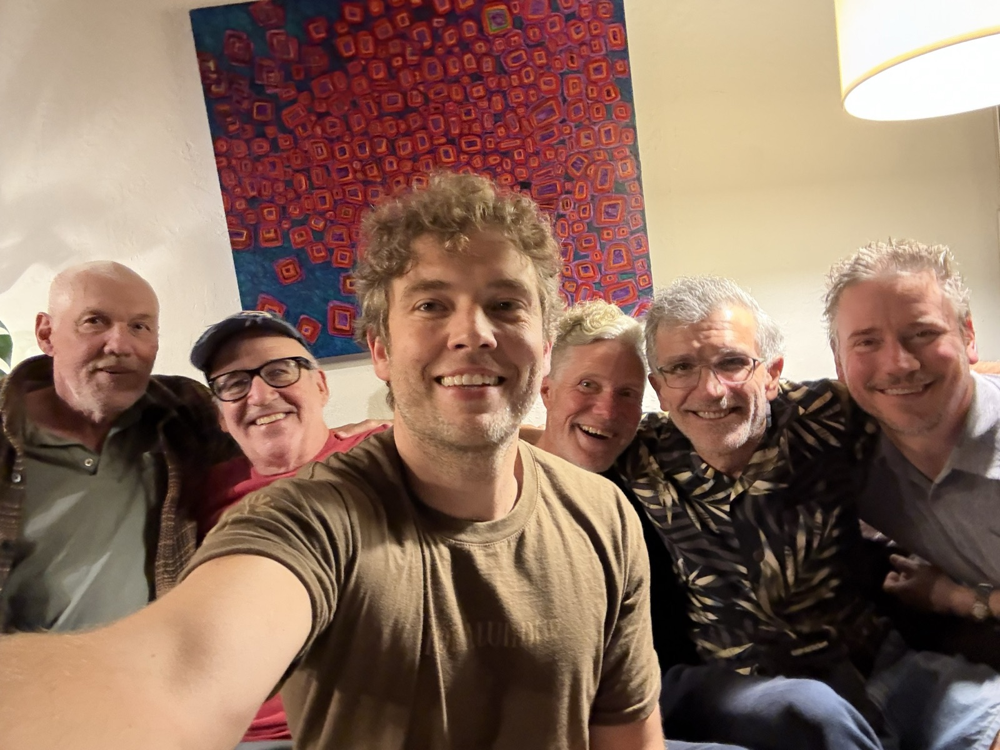

Manifest Mens Group (“Manifest”) is an IRS-recognized 501(c)(3) nonprofit organization based in Marin County, California. Manifest provides ongoing men's groups and community programs focused on Men's Work, personal growth, authentic connection, and mutual support. Manifest Mens Group operates this website, manifestmensgroup.org, as its official and primary website.
For 40 years, Men's Work has evolved in the Bay Area and across the country as a practice of radical honesty and mutual support. The work is about men stepping out from behind their shadows to be seen by a chosen circle of men. It takes intense trust to be visible to one's peers in this way, and it's an experience most men simply never have given how easy it is to remain anonymous in an isolated world. But once a man takes the bold step to be seen and feels the weight that lifts off his shoulders, he rarely goes back.
Our groups are about growth, but also so much more. The work includes friendship, male camaraderie, fun, laughs, and a sense of being part of something larger than oneself. The groups range from 6-10 men, are private and confidential, and meet weekly for indefinite periods of time. The time commitment is not trivial, but the rewards are virtually unlimited. In short, our groups are a place where you can expect to make some of your most important lifelong friendships.
Thousands of men have transformed their lives through this work. Is it time to see what it can do for yours?
